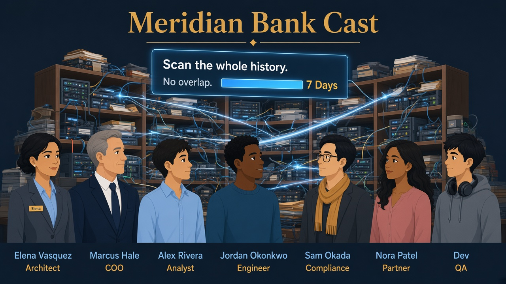
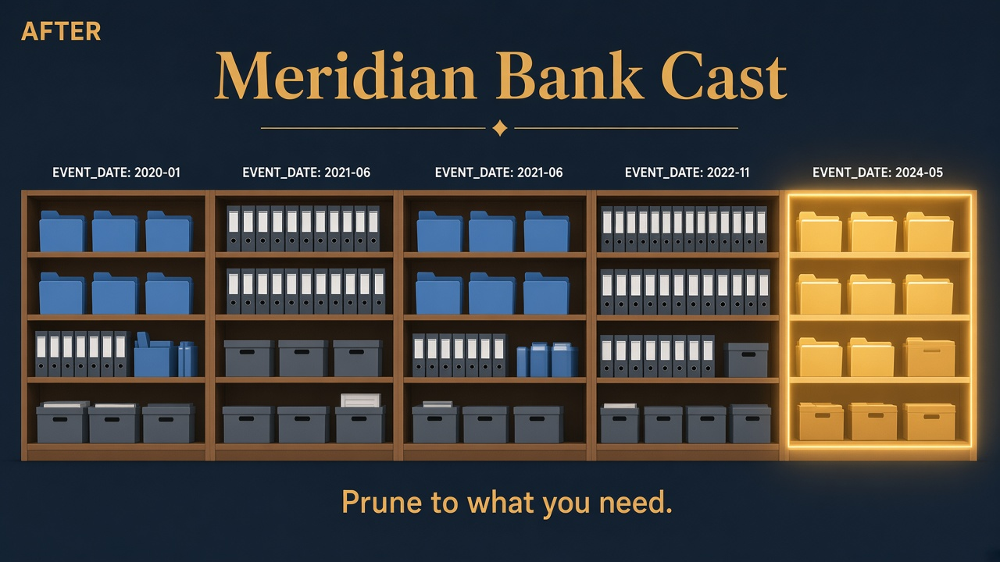
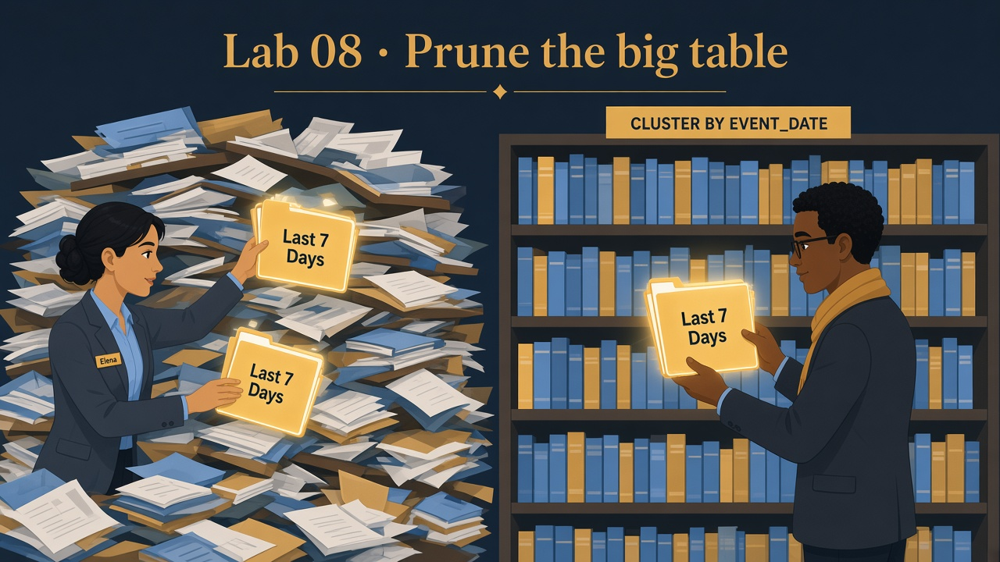

1
Set session + SILVER_CURATED
What this does
Lab admin context; SILVER_CURATED schema holds the demo fact table.
SQL · context
USE ROLE ROLE_BANK_LAB_ADMIN;
USE WAREHOUSE WH_BANK_XS;
USE DATABASE MERIDIAN_BANK;
USE SCHEMA SILVER_CURATED;Lab 08 · Friday noon · You are Elena · Risk dashboards
Lab 07 already loaded SILVER_CURATED.BIG_EVENTS (~400k rows) and taught Query Profile.
Risk filters on recent dates; without clustering Snowflake may still open too many micro-partitions.
You will cluster on EVENT_DATE and re-run the last-7-days aggregate.
BIG_EVENTS to recent weeks; at production scale queries scan huge swaths of history.
Finance sees the credit line move when every “last 7 days” report reads a year of junk — even after Lab 07’s SQL fixes.
BIG_EVENTS, read SYSTEM$CLUSTERING_INFORMATION, run ALTER TABLE … CLUSTER BY (EVENT_DATE),
then prove the same filtered aggregate (Lab 07 Profile vocabulary: better pruning on real volume).


Random dates in one pile → librarian checks every book for “last 7 days.”
Clustering re-shelves by EVENT_DATE so Snowflake skips whole micro-partitions via metadata.
CLUSTER BY (EVENT_DATE)
Co-locate similar dates — not the same as primary key.
SYSTEM$CLUSTERING_INFORMATION
How well sorted the table is — maintenance signal.
Data still there — query just doesn’t open those partitions.
Point lookups on IDs — date windows → clustering.

Lab admin context; SILVER_CURATED schema holds the demo fact table.
USE ROLE ROLE_BANK_LAB_ADMIN;
USE WAREHOUSE WH_BANK_XS;
USE DATABASE MERIDIAN_BANK;
USE SCHEMA SILVER_CURATED;Lab 07 created ~400k unclustered rows and kept them on purpose. Confirm volume before you cluster.
ROW_CNT near 400000. If the table is missing, run the optional rebuild block once.
SELECT COUNT(*) AS ROW_CNT, MIN(EVENT_DATE) AS MIN_DT, MAX(EVENT_DATE) AS MAX_DT
FROM BIG_EVENTS;CREATE OR REPLACE TABLE BIG_EVENTS AS
SELECT
SEQ4() AS EVENT_ID,
UNIFORM(1, 5, RANDOM()) AS CLIENT_ID,
DATEADD('day', -UNIFORM(0, 364, RANDOM()), CURRENT_DATE()) AS EVENT_DATE,
UNIFORM(1, 100, RANDOM())::NUMBER(12, 2) AS AMOUNT,
UNIFORM(1, 4, RANDOM()) AS STATUS_CODE
FROM TABLE(GENERATOR(ROWCOUNT => 400000));Asks Snowflake how well rows align on EVENT_DATE before we declare a clustering key.
JSON-ish stats — overlap / depth numbers. Interview: “I’d track this after loads; re-cluster if overlap drifts.”
SELECT SYSTEM$CLUSTERING_INFORMATION(
'SILVER_CURATED.BIG_EVENTS', '(EVENT_DATE)'
);ALTER TABLE … CLUSTER BY (EVENT_DATE) tells Snowflake to maintain better date locality over time (automatic background work).
ALTER TABLE BIG_EVENTS CLUSTER BY (EVENT_DATE);Same business filter Risk runs daily — count and sum only recent events.
One result row (count + sum). Re-check clustering information after; tie bytes/pruning back to Lab 07 Profile vocabulary.
SELECT COUNT(*), SUM(AMOUNT)
FROM BIG_EVENTS
WHERE EVENT_DATE >= DATEADD('day', -7, CURRENT_DATE());SELECT SYSTEM$CLUSTERING_INFORMATION(
'SILVER_CURATED.BIG_EVENTS', '(EVENT_DATE)'
);SELECT 'Lab 08 clustering demo ready — BIG_EVENTS clustered on EVENT_DATE' AS status;sql/08_clustering.sql